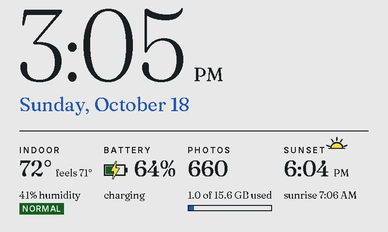
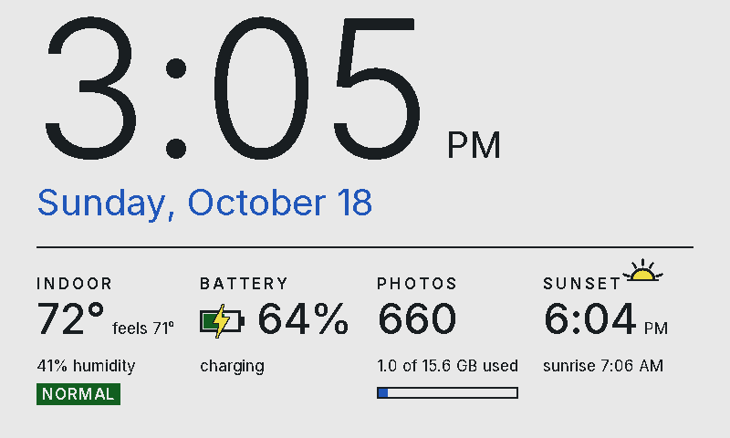
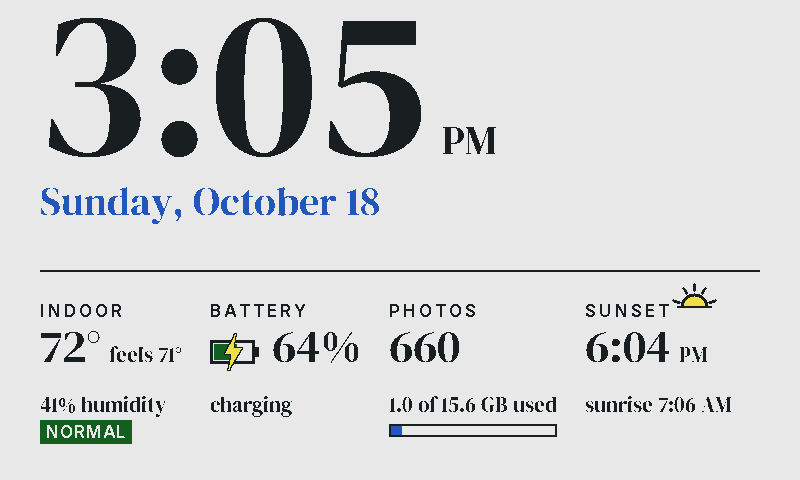
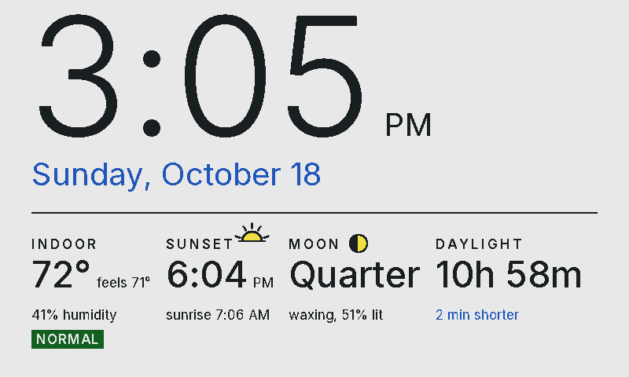
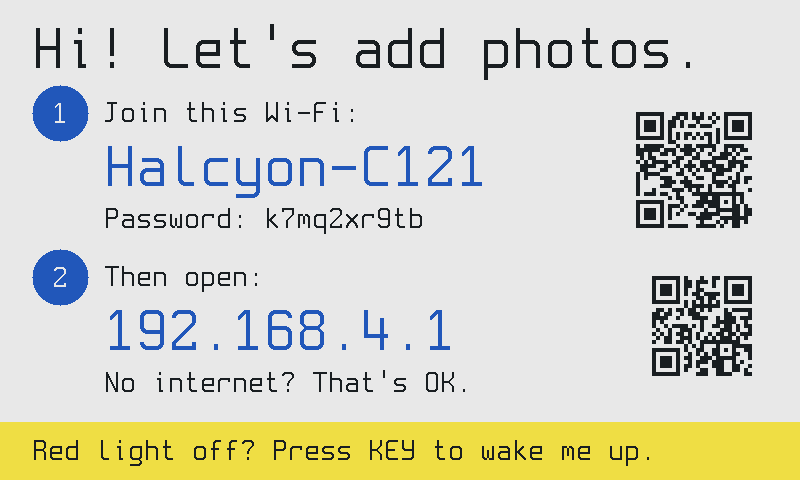

Everything stays home
The frame runs its own small web page. Open it on your phone or computer, add photos, and they're saved to the memory card inside the frame. Nothing is uploaded anywhere.
Halcyon Frame is open firmware for e-paper photo frames. Your photos and settings stay on the frame: no cloud, no account, no app, no subscription. It changes slowly and quietly, and never glows.
For the Waveshare ESP32-S3-PhotoPainter (7.3" six-colour e-paper).

In Greek myth, the gods stilled the sea for seven days each winter so the halcyon, the kingfisher, could nest on the waves. Halcyon days came to mean a calm, fondly remembered time. That's what a wall of family photos is for, and it's what this frame tries to be.
The frame runs its own small web page. Open it on your phone or computer, add photos, and they're saved to the memory card inside the frame. Nothing is uploaded anywhere.
Your browser crops each photo to the frame and maps it to the panel's six inks with careful dithering, so what you preview is what you get. Add hundreds at once; photos already on the frame are skipped.
At the top of the hour, or with a press of a button: the time, indoor temperature and humidity (with a mold-risk flag), battery, sunrise and sunset, the moon. Seven typefaces, four cards you choose.
E-paper keeps its picture with no power, so the frame sleeps between changes. Pick when photos change, set quiet hours, and it won't bother you.
No manual needed. When something needs you (joining Wi-Fi, a missing card, an empty battery), the frame says so on its screen, with a QR code to the right page.
New versions install over Wi-Fi from the frame's settings. If an update doesn't start properly, the frame goes back to the previous version on its own.




You'll need a Waveshare ESP32-S3-PhotoPainter and a USB-C data cable.
Checking the latest version…
Put it into download mode: hold the BOOT button, press and release PWR (or unplug and replug the cable), then let go of BOOT. Try Install again. This also rescues a frame whose firmware won't start.
Prefer the command line? Download halcyonframe-full.bin from the
releases and run
esptool.py --chip esp32s3 write_flash 0x0 halcyonframe-full.bin.
To go back to Waveshare's firmware, flash their factory image at offset 0x0 the same way.
No. The frame works entirely on your home network, or on its own Wi-Fi hotspot with no network at all.
If you allow it (it's a setting, on by default), it uses the internet for two small things only: the time
from pool.ntp.org, and your time zone and approximate location from ip-api.com
for the sunrise and sunset cards. Turn it off and nothing leaves your home.
On the memory card inside the frame, as files you can copy off on any computer. There is no account and no server.
The Waveshare ESP32-S3-PhotoPainter with the 7.3" Spectra 6 panel, available from Waveshare and its resellers. Halcyon Frame isn't affiliated with Waveshare.
Yes. Flash Waveshare's factory image with the same tools (see "the install fails" above).
The frame's page is only reachable on your own network or its hotspot, and it's protected against requests from other websites. There's no password on the page itself, so anyone on your Wi-Fi can manage photos: keep it on a network you trust.
Yes, MIT-licensed, at github.com/halcyonframe. Contributions and bug reports are welcome.